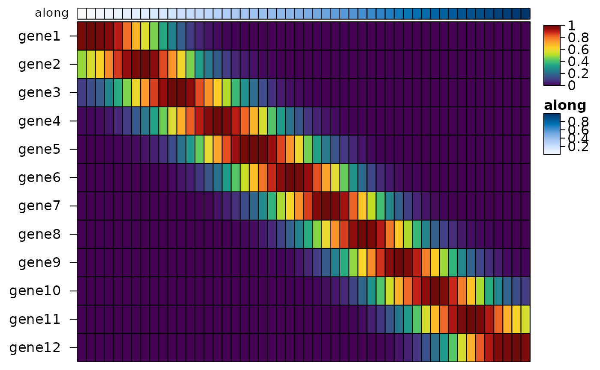

heat_map_smooth() bins cells along a trajectory (e.g. their
pseudotime) and finds the mean of each feature in each bin, smoothed over
neighbouring bins, for heatmaps of genes or markers along pseudotime. With
tree_order_x = "peak" (or tree_order_y with
swap_axes = TRUE), heat_map() then orders the features by
when they peak, so that cascades run diagonally.
Usage
heat_map_smooth(
x,
along,
features = NULL,
assay = NULL,
bins = 100,
span = 5,
binning = "cells",
group_by = NULL
)Arguments
- x
single-cell data (a
SingleCellExperimentorSummarizedExperiment, aSeuratobject, aflowFrameorflowSet, a sparse matrix with one cell per row), or a matrix or data.frame of cells; seeheat_map.- along
the position of each cell along the trajectory: the name of a numeric column of the cells' metadata (or of
x), several names for several lineages, or a numeric vector with one value per cell. Cells with a missing position are left out (of that lineage).- features
the features to smooth, as names (or indices); see
heat_map. Set toNULLby default for every feature.- assay
the values of single-cell data to smooth; see
heat_map.- bins
the number of bins along the trajectory (of each lineage), set to 100 by default. A lineage with fewer cells has one bin per cell.
- span
the number of bins each mean is taken over, set to 5 by default; 1 takes the mean of each bin on its own.
- binning
"cells"(default) for bins with equal numbers of cells, or"width"for bins of equal width alongalong.- group_by
the lineage of each cell, for trajectories with one
alongfor all lineages: the name of a column of the cells' metadata, or a vector with the lineage of each cell. Each lineage is smoothed on its own.
Value
a numeric matrix with one row per bin (bins of each lineage in
turn, named "lineage / bin") and one column per feature, holding
the smoothed means. As heat_map_summarise summaries of
groups, it keeps the attributes "n" (the number of cells in each
bin, for bar_values_y = "n") and "groups": a data.frame
with the lineage of each bin and its position (the mean of along
over its cells, named as along, or "along"), which
heat_map(annotation_by = ) draws as annotation tracks and
heat_map(group_by = "lineage") uses to group the bins; and
"along", the name of the position's column, from which peak
orders (tree_order_x = "peak") read when each bin is, so that the
peaks of lineages covering different stretches of the trajectory are
compared by their position along it.
Details
The cells are put in bins bins along along: bins with equal
numbers of cells (binning = "cells"), which follow the density of
the cells along the trajectory, or bins of equal width
(binning = "width"). The value of each feature in a bin is the mean
of the cells in the span bins around it (the bin itself and
(span - 1) / 2 bins either side, fewer at the ends), a running mean
weighted by the cells in each bin. The means are found in compiled code,
without a dense copy of sparse data.
Branching trajectories are smoothed one lineage at a time, from several
along columns (one per lineage, e.g. slingshot's pseudotimes, which
are missing for cells outside a lineage) or from group_by; the
lineages are stacked in the result, and heat_map(group_by =
"lineage") draws them side by side.
Examples
# Twelve genes, each peaking at its own point along pseudotime
set.seed(1)
pseudotime <- runif(3000)
peaks <- seq(0.05, 0.95, length.out = 12)
genes <- sapply(peaks, function(p) {
rpois(3000, 8 * exp(-((pseudotime - p) / 0.12)^2))
})
colnames(genes) <- paste0("gene", 1:12)
genes <- genes[, sample(12)]
smooth <- heat_map_smooth(genes, along = pseudotime, bins = 50)
# Genes as rows, ordered by when they peak, with pseudotime as a track
heat_map(
smooth,
swap_axes = TRUE,
scale = "row",
tree_order_y = "peak",
annotation_by = "along",
axis_text_x = NA,
popup = FALSE
)
#> Applying range scaling to each row...
